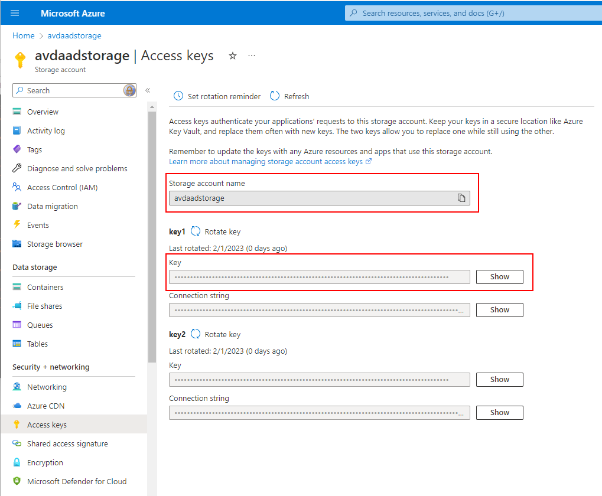
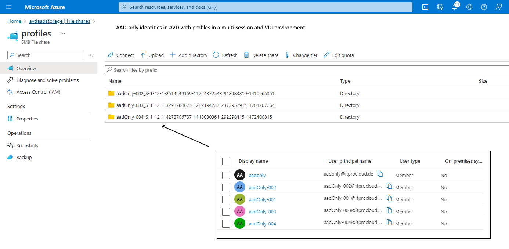
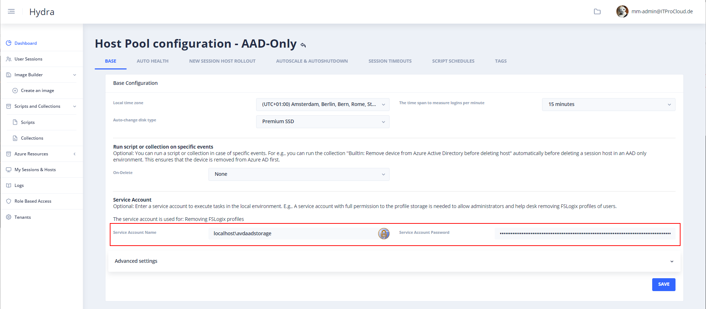
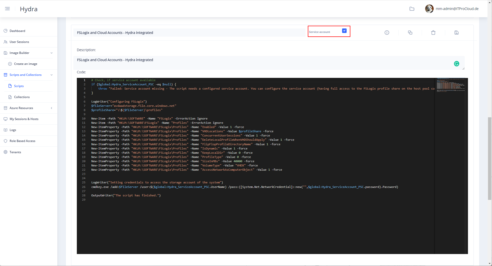
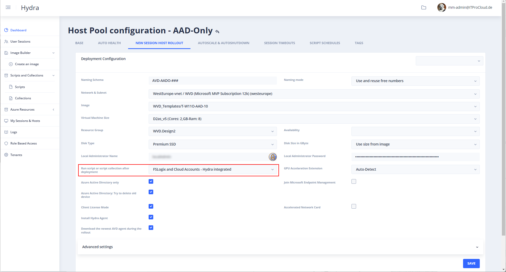
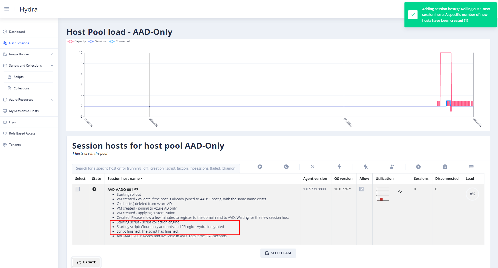

Using FSLogix file shares with Azure AD cloud identities in Azure Virtual Desktop - cloud-only, AVD
With AAD-Kerberos, you can use AAD-only joined session hosts with FSLogix. This is a great approach to working more cloud-native. With AAD-Kerberos, the session hosts don't need to have network line-of-sight to the domain controller.
However, the user identities must still be hybrid / synchronized from a legacy AD right now. And that prevents having AAD-only users in a multi-user pool in AVD where a profile is mostly mandatory.
Update 2023-03-02 
There was an issue in the script/parameter for cmdkey. The parameter we need is /add not /generic
Update 2023-02-15
Change of the script to work with Windows 11 22H2 Windows 11 22H2 removes the cmdkey entry if the host is deallocated and started again. The additional registry key prevents this behavior.
Update 2024-12-05
Change of the script to include credentials in the profile
Workaround
I found a nice workaround to do the same with cloud-only users in Azure AD - including the use of FSLogix file shares.
Today, an Azure file share cannot be configured to use the AAD like an AD to set NTFS permissions. This is necessary to give the users the right permissions to create a profile folder on the share and have full access only to their own created files (the profile disk). Users should never have access to the profile disks of other users - to prevent data theft or to modify other users' data).
But how to handle this? For this workaround, I use a technic I have often used in the past to cover similar challenges (like this post). In Windows, you can configure on a resource level what credential should be used - and that on a per-user level. This also works for the system account and, therefore, also for services. So, we are able to "teach" the system account to use specific credentials to access an Azure storage account.
In our case, we need credentials to have full access to an Azure file share. And there are credentials to do that: The storage account credentials. Each storage account has credentials that can be used to have full access. You can grab the credentials from the "Access Key" menu in the storage account:

Collect the right values:
| Type | Value |
|---|---|
| User name: | localhost\ |
| Secret: | <Key> |
| StorageAccountFqdn: | <storageAccountName>.file.core.net (the files endpoint) |
In my example, the user name is "localhost\avdaadstorage" and <StorageAccountFqdn> is "avdaadstorage.file.core.windows.net"
To "teach" the system account to use these credentials, we have to run the following command in the context of the system account:
cmdkey.exe /add:<StorageAccountFqdn> /user:localhost\<StorageAccountName> /pass:<Key>
Example:
cmdkey.exe /add:avdaadstorage.file.core.windows.net /user:localhost\avdaadstorage /pass:xxxxxxxxxxxxxxxx
After running the command on a host/VM, any access in the context of the system account to the storage runs with the configured credentials - to every share!
Great, our system can now access the shares on the storage account and has full permission.
Window 11 22H2 and Credential Guard with UEFI lock
To prevent that Windows 11 22H2 removes the cmdkey entry if the host is deallocated and started again. The additional registry key is needed:
New-ItemProperty -Path "HKLM:\SYSTEM\CurrentControlSet\Control\Lsa" -Name "LsaCfgFlags" -Value 0 -force # Only needed for Windows 11 22H2
Remember that this disables Windows Defender Credential Guard.
Credential manager
If you save credentials to the credential manager, those credentials are not included in the profile. This can be changed by setting the following registry key and value
New-ItemProperty -Path "HKLM:\Software\Policies\Microsoft\AzureADAccount" -Name "LoadCredKeyFromProfile" -Value 1 -force
Configuring FSLogix
Next step: Configure FSLogix to use the system account. Normally, FSLogix will access the share to store and read profiles in the user context. That is normally fine if users are able to authenticate with their own identity. In our case, we want to use the system account. The following reg-key configures FSLogix to use the system account:
| Type | Value |
|---|---|
| Path: | HKLM:\SOFTWARE\FSLogix\Profiles |
| Name: | AccessNetworkAsComputerObject |
| Type: | DWord |
| Value: | 1 |
This value can be set via registry or PowerShell:
New-Item -Path "HKLM:\SOFTWARE" -Name "FSLogix" -ErrorAction Ignore
New-Item -Path "HKLM:\SOFTWARE\FSLogix" -Name "Profiles" -ErrorAction Ignore
New-ItemProperty -Path "HKLM:\SOFTWARE\FSLogix\Profiles" -Name "AccessNetworkAsComputerObject" -Value 1 -force
New-ItemProperty -Path "HKLM:\Software\Policies\Microsoft\AzureADAccount" -Name "LoadCredKeyFromProfile" -Value 1 -force # Include credentials in the profile
New-ItemProperty -Path "HKLM:\SYSTEM\CurrentControlSet\Control\Lsa" -Name "LsaCfgFlags" -Value 0 -force # Only needed for Windows 11 22H2
If not already done, configure the file share: - Create a share on your storage account (e.g., profiles) - Configure FSLogix to use the share on each host:
| Type | Value |
|---|---|
| Path: | HKLM:\SOFTWARE\FSLogix\Profiles |
| Name: | VHDLocations |
| Type: | Reg_SZ |
| Value: | \\ |
And enable FSLogix profile service:
| Type | Value |
|---|---|
| Path: | HKLM:\SOFTWARE\FSLogix\Profiles |
| Name: | Enabled |
| Type: | DWord |
| Value: | 1 |
After that, users can log in to the hosts, and the profile is stored on the file share on the storage account:

Security
How secure is that? - Users cannot access their own or other profiles by entering the path to the share while they don't have the storage account credentials. - Users can also not run programs in the system context (if they are not local admins on the host - what I expect). - Every local administrator of a host can run processes in the system context: So the local admin permissions/role must be secured to prevent admins from accessing the profile storage indirectly or reading the storage account credentials. - Azure Administrator with the permission Microsoft.Compute/virtualMachines/runCommand/action can send scripts running in the system context to a host/VM (like a contributor). That is comparable to local administrator permission. - The system has permission to access all shares on the storage account with the credentials. Not only the profile share. It makes sense to have a separate share for the profiles.
Summary: Users with non-admin permissions can not access other users' profiles. Local admins are able to do this, but local admins are able to compromise users in other ways. So local admin privileges should be considered carefully. Same for privileged access in Azure.
Do the full configuration with a script
Let me share a script you can use to do the full configuration with a script. In the script, I also set some other basic configurations I mostly use for FSLogix. Keep in mind that the user name is part of the path and profile disk name. If you rename the display name of a user, the user will get a new profile.
The script must be executed directly after the rollout of a new host in the system context. It's not possible to do that on the Master VM while the credential store is reset during sysprep. To run the script in the system context, use PSEXEC to open PowerShell in the system context (psexec /s powershell.exe).
WARNING: The script contains a secret. Delete the script from the host
write-host "Configuring FSLogix"
$fileServer="avdaadstorage.file.core.windows.net"
$profileShare="\\$($fileServer)\profiles"
$user="localhost\avdaadstorage"
$secret="###################"
New-Item -Path "HKLM:\SOFTWARE" -Name "FSLogix" -ErrorAction Ignore
New-Item -Path "HKLM:\SOFTWARE\FSLogix" -Name "Profiles" -ErrorAction Ignore
New-ItemProperty -Path "HKLM:\SOFTWARE\FSLogix\Profiles" -Name "Enabled" -Value 1 -force
New-ItemProperty -Path "HKLM:\SOFTWARE\FSLogix\Profiles" -Name "VHDLocations" -Value $profileShare -force
New-ItemProperty -Path "HKLM:\SOFTWARE\FSLogix\Profiles" -Name "ConcurrentUserSessions" -Value 1 -force
New-ItemProperty -Path "HKLM:\SOFTWARE\FSLogix\Profiles" -Name "DeleteLocalProfileWhenVHDShouldApply" -Value 1 -force
New-ItemProperty -Path "HKLM:\SOFTWARE\FSLogix\Profiles" -Name "FlipFlopProfileDirectoryName" -Value 1 -force
New-ItemProperty -Path "HKLM:\SOFTWARE\FSLogix\Profiles" -Name "IsDynamic" -Value 1 -force
New-ItemProperty -Path "HKLM:\SOFTWARE\FSLogix\Profiles" -Name "KeepLocalDir" -Value 0 -force
New-ItemProperty -Path "HKLM:\SOFTWARE\FSLogix\Profiles" -Name "ProfileType" -Value 0 -force
New-ItemProperty -Path "HKLM:\SOFTWARE\FSLogix\Profiles" -Name "SizeInMBs" -Value 40000 -force
New-ItemProperty -Path "HKLM:\SOFTWARE\FSLogix\Profiles" -Name "VolumeType" -Value "VHDX" -force
New-ItemProperty -Path "HKLM:\SOFTWARE\FSLogix\Profiles" -Name "AccessNetworkAsComputerObject" -Value 1 -force
# Include credentials in the profile
New-ItemProperty -Path "HKLM:\Software\Policies\Microsoft\AzureADAccount" -Name "LoadCredKeyFromProfile" -Value 1 -force
# Store credentials to access the storage account
cmdkey.exe /add:$fileServer /user:$($user) /pass:$($secret)
# Disable Windows Defender Credential Guard (only needed for Windows 11 22H2)
New-ItemProperty -Path "HKLM:\SYSTEM\CurrentControlSet\Control\Lsa" -Name "LsaCfgFlags" -Value 0 -force
write-host "The script has finished."
Use Hydra to run the script on-demand or automatically after each rollout
You can use Hydra for Azure Virtual Desktop to apply the script automatically after rolling out a new host.
Open the host pool configuration in Hydra -> Base and configure the service account: - Service account name: localhost\avdaadstorage - Service account password: <key of the storage account> - Save

Scripts and Collections -> Scripts - Duplicate an existing script to have a new one - Check "Service Account" - Give it a good name (e.g., "FSLogix and Cloud Accounts - Hydra integrated") - Copy the following script into the code field - Save
Script:
# Check, if service account available
if ($global:Hydra_ServiceAccount_PSC -eq $null) {
throw "Failed: Service account missing - The script needs a configured service account. You can configure the service account (having full access to the FSLogix profile share on the host pool configuration."
}
LogWriter("Configuring FSLogix")
$fileServer="$($($global:Hydra_ServiceAccount_PSC.UserName).Split('\')[1]).file.core.windows.net"
$profileShare="\\$($fileServer)\profiles"
New-Item -Path "HKLM:\SOFTWARE" -Name "FSLogix" -ErrorAction Ignore
New-Item -Path "HKLM:\SOFTWARE\FSLogix" -Name "Profiles" -ErrorAction Ignore
New-ItemProperty -Path "HKLM:\SOFTWARE\FSLogix\Profiles" -Name "Enabled" -Value 1 -force
New-ItemProperty -Path "HKLM:\SOFTWARE\FSLogix\Profiles" -Name "VHDLocations" -Value $profileShare -force
New-ItemProperty -Path "HKLM:\SOFTWARE\FSLogix\Profiles" -Name "ConcurrentUserSessions" -Value 1 -force
New-ItemProperty -Path "HKLM:\SOFTWARE\FSLogix\Profiles" -Name "DeleteLocalProfileWhenVHDShouldApply" -Value 1 -force
New-ItemProperty -Path "HKLM:\SOFTWARE\FSLogix\Profiles" -Name "FlipFlopProfileDirectoryName" -Value 1 -force
New-ItemProperty -Path "HKLM:\SOFTWARE\FSLogix\Profiles" -Name "IsDynamic" -Value 1 -force
New-ItemProperty -Path "HKLM:\SOFTWARE\FSLogix\Profiles" -Name "KeepLocalDir" -Value 0 -force
New-ItemProperty -Path "HKLM:\SOFTWARE\FSLogix\Profiles" -Name "ProfileType" -Value 0 -force
New-ItemProperty -Path "HKLM:\SOFTWARE\FSLogix\Profiles" -Name "SizeInMBs" -Value 40000 -force
New-ItemProperty -Path "HKLM:\SOFTWARE\FSLogix\Profiles" -Name "VolumeType" -Value "VHDX" -force
New-ItemProperty -Path "HKLM:\SOFTWARE\FSLogix\Profiles" -Name "AccessNetworkAsComputerObject" -Value 1 -force
# Include credentials in the profile
New-ItemProperty -Path "HKLM:\Software\Policies\Microsoft\AzureADAccount" -Name "LoadCredKeyFromProfile" -Value 1 -force
LogWriter("Setting credentials to access the storage account of the system")
cmdkey.exe /add:$fileServer /user:$($global:Hydra_ServiceAccount_PSC.UserName) /pass:([System.Net.NetworkCredential]::new("",$global:Hydra_ServiceAccount_PSC.password).Password)
LogWriter("Disable Windows Defender Credential Guard (only needed for Windows 11 22H2)")
New-ItemProperty -Path "HKLM:\SYSTEM\CurrentControlSet\Control\Lsa" -Name "LsaCfgFlags" -Value 0 -force
OutputWriter("The script has finished.")

After that, you can trigger the script on a host or let it run automatically after each deployment: - Open the host pool configuration in Hydra -> New Session Host Rollout - Configure the rollout parameter - Select the script in "Run script or script collection after deployment"

After that a new rollout looks like this:

Others
And yes, there are other options to run the script in the system context automatically. Please ensure that the password/secret is not stored on the host's disk.
Hint: You can create another share for MSIX App-Attach packages. The system account also has permission to load the packages.
Note: It's a nice workaround to bridge the time until there is a native solution in Azure. Please use it at your own risk.